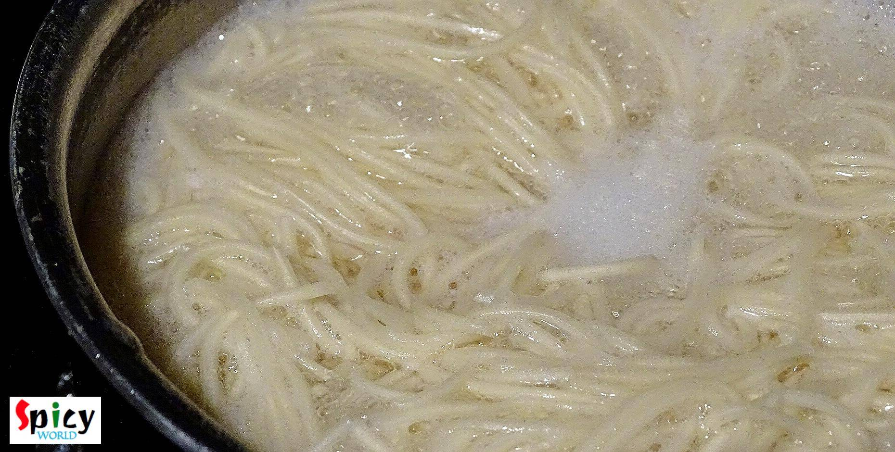
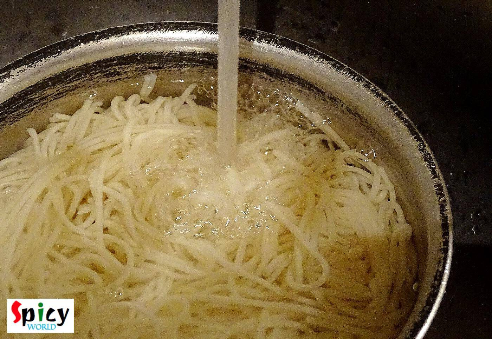
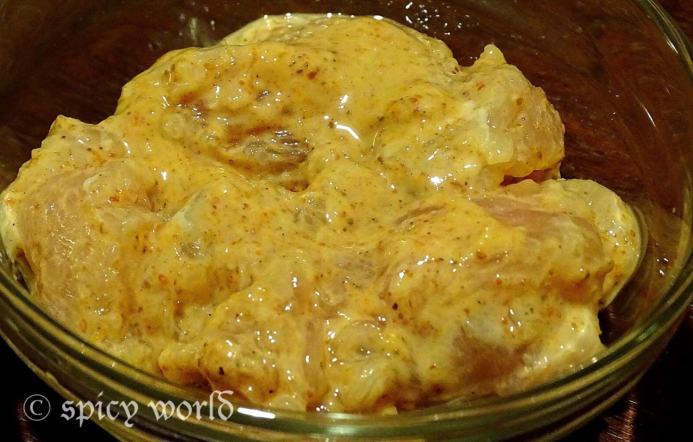
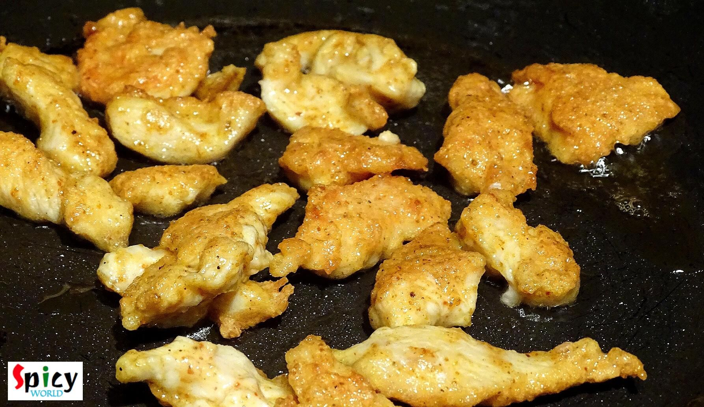
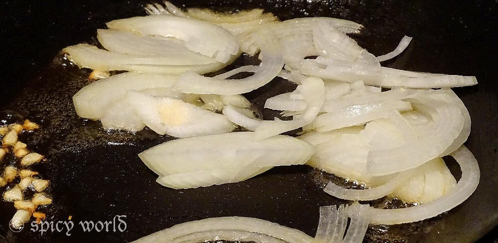
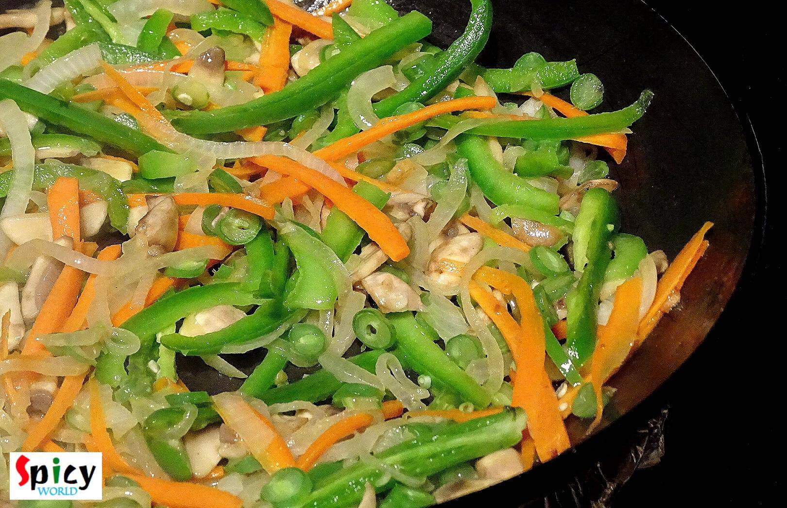
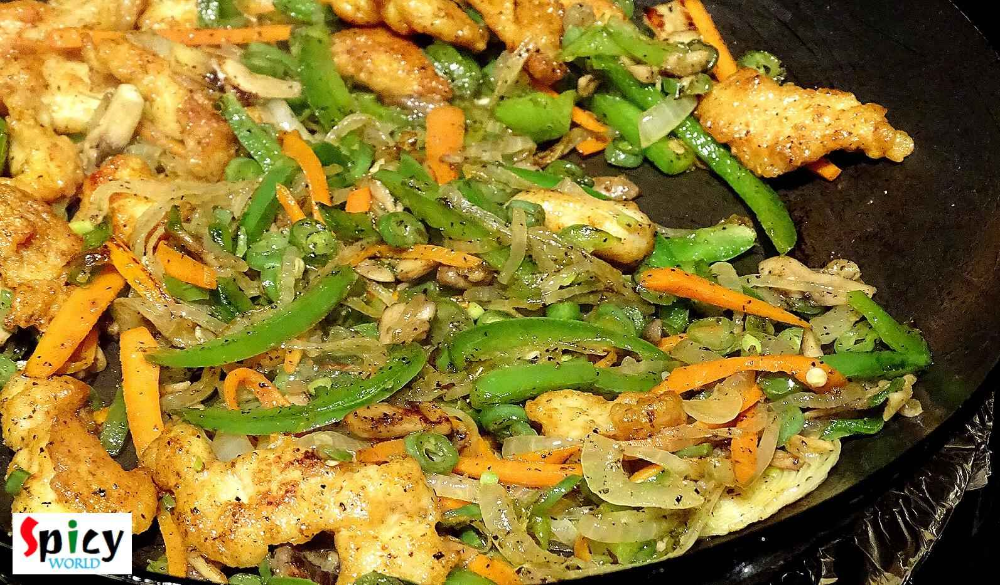
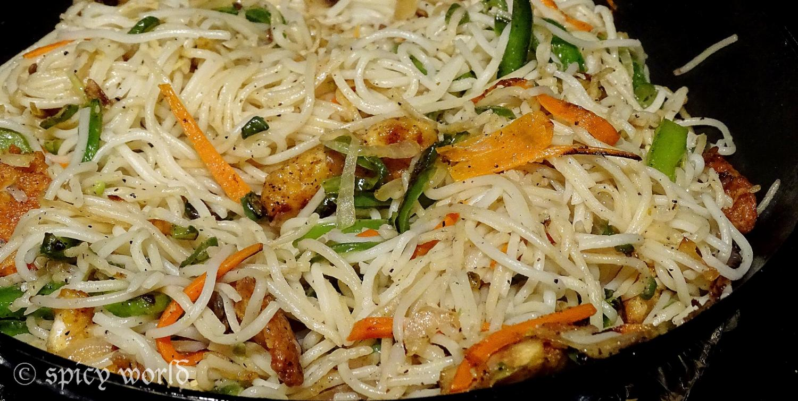
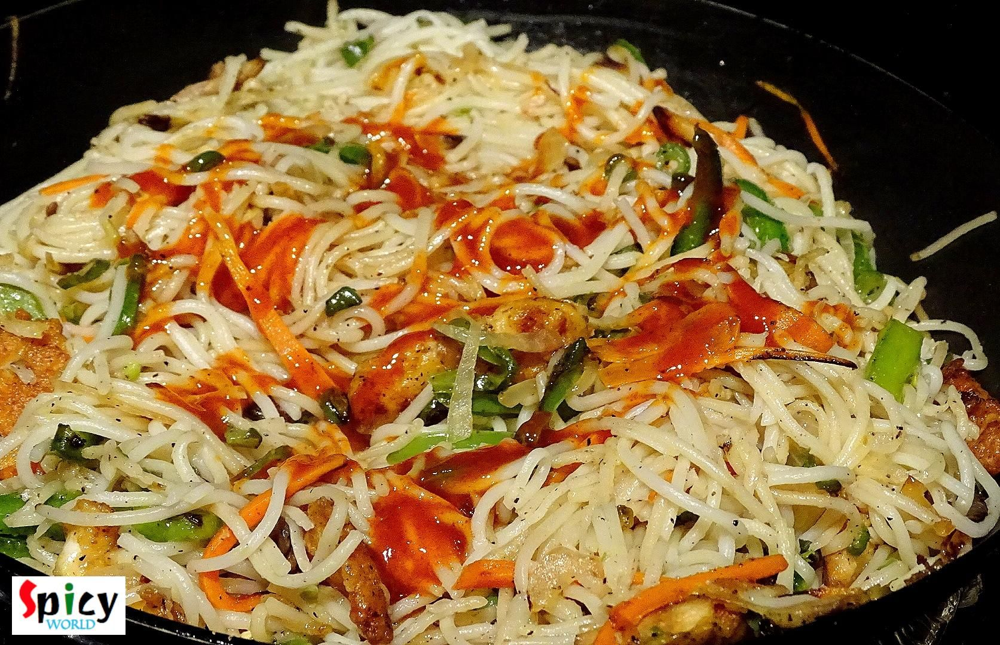
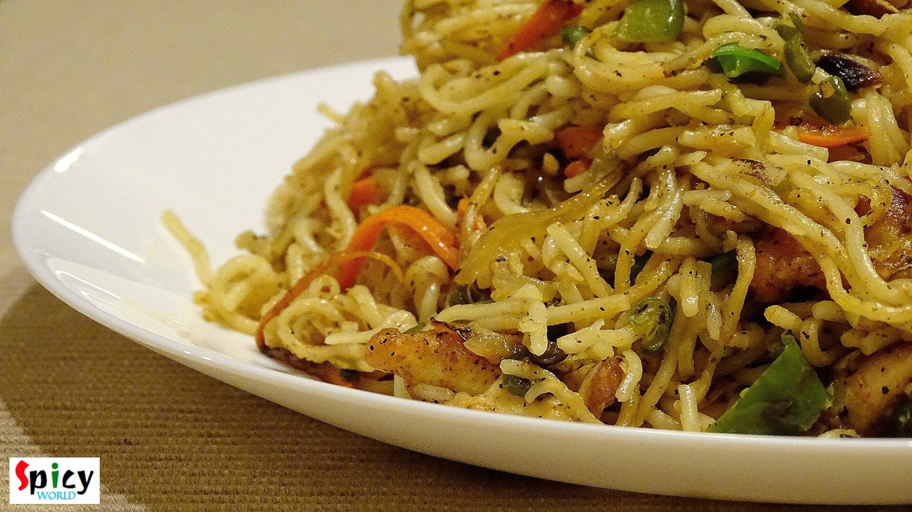

Chicken Hakka Noodles
It is almost impossible to find them who doesn't love chinese food, specially 'hakka noodles'. I think, this is the most frequently ordered dish in any indo-chinese restaurant. I, personally don't like any side dish with hakka noodles because this chinese dish has its own magic. I made this noodles in dinner and the taste turned out exceptionally good, the flavour was same like restaurants. Try this in your kitchen and share your 'noodles story' with me ...

Ingredients
- 1 pack of Hakka noodles.
- 10-15 chicken strips.
- 2 Teaspoons of beaten egg.
- 1 Teaspoon of cornflour.
- 1 cup onion slices.
- Mix veg slices (capsicum, mushroom, carrots, french beans).
- 2 green chilies sliced.
- 1 clove garlic chopped.
- Salt.
- Black pepper 2 Teaspoons.
- Msg 1 Teaspoon.
- Vinegar 1 Teaspoon.
- 2 Teaspoons soy sauce.
- 3 Teaspoons chilli sauce.
- White oil 5 Teaspoons.
- Water.
- Some chopped spring onion.

Steps
Boil the noodles (for 2 person) in water untill it becomes firm to bite.

Drain the water and wash the noodles with cold water immediately. Keep aside.

Add 2 Teaspoons of beaten egg, 1 Teaspoon cornflour and pinch of salt. Mix it very well.

Now take a wok. Heat 3 Teaspoons oil.
Add the chicken strips one by one. Fry it for 5 minutes. Then remove them from the pan.

Add the remaining oil in the pan.
Add chopped garlic. Saute it for a minute.
Add sliced onion and pinch of salt. Mix it for 4 minutes.

Then add mix veg slices and green chilies. Fry it for 5-6 minutes in high flame.

After that add msg, black pepper powder and some more salt. Mix it.
Add the chicken strips. Mix it for 2 minutes.

Then add the boiled noodles. Mix it very well.

Now add soy sauce, chilli sauce and vinegar. Mix it well.

Adjust the salt, heat and dont make the vegetables soggy.
Lastly add some chopped spring onion. Turn off the heat.

Your chicken hakka noodle is ready.
- Serve hot with any side dish of your choice.
")